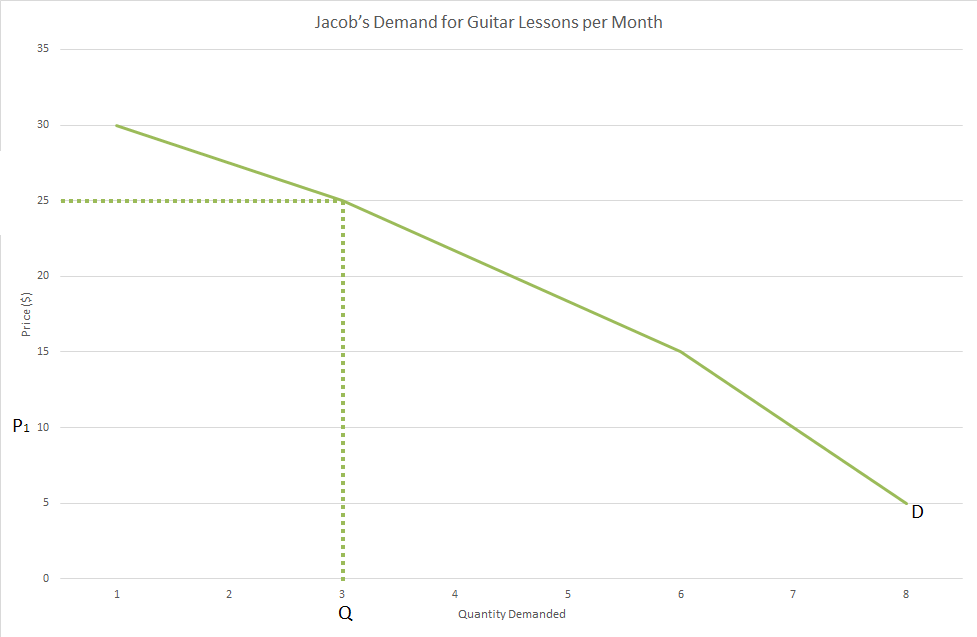
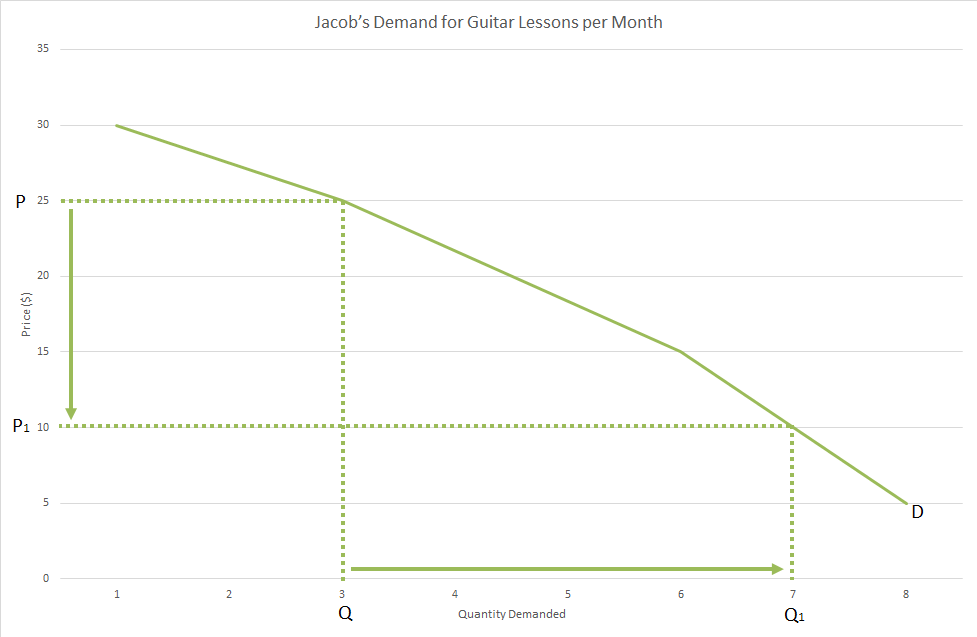
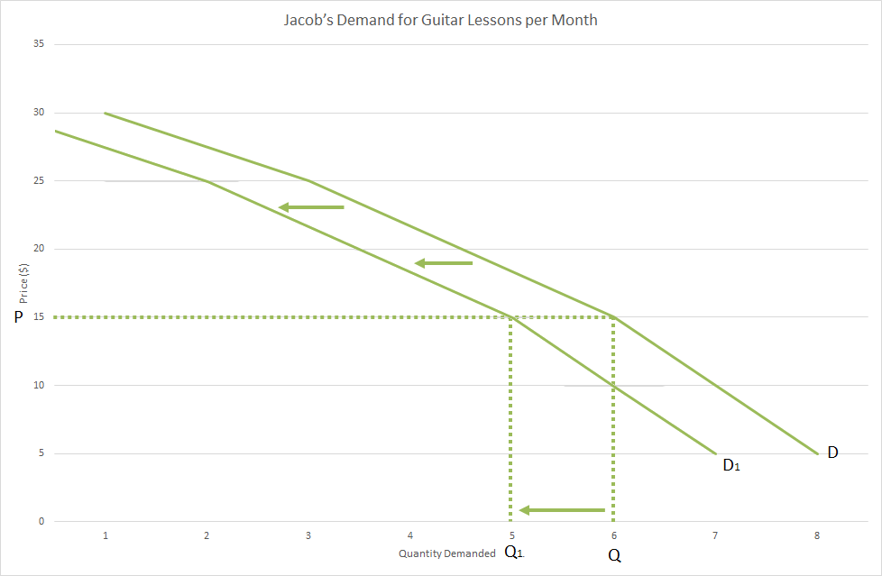

Needs and Wants
when looking at any thing we but they fall under two categories, needs and wants. Needs are the things we have to have in order to survive, these generally come under the categories of food, shelter and clothing. A want is anything else that we don’t have to have to survive but want to have due to the satisfaction we get from it. We have an unlimited number of wants. There is always something else we would like to have, whether or not it can be bought with money.
Resources
Resources are things that are used in the production of goods and services to fulfil our needs and wants, they are the input into the production process. There are three kinds of resources:
- Natural resources – these are “Gifts of nature” and are anything that occur naturally on earth. They can be either renewable or non-renewable e.g. trees or oil
- Capital goods – these are man-made goods that are used in the production of other goods and services e.g. a computer or copper wire
- Human resources – these are humans which exert either a physical or mental effort in the production of a good or service e.g. a carpenter or a teacher
There are only a limited number of resources available for us to use.
Scarcity and Opportunity Cost
Scarcity (or the basic economic problem) is the central idea behind economics. It is the idea that we have an unlimited amount of wants but only a limited amount of resources to fulfil them with. This means we are forced to make decisions about what we want to do with our limited resources of time, money and knowledge. This leads to opportunity cost, that is, the next best alternative forgone when a decision is made. For example if you want to go to the movies, top up your phone and eat out but, can only afford one, you have to make a choice. If you chose to go to the movies the opportunity cost could be eating out because that is the next thing you wanted to do. Topping up your phone is not an opportunity cost as it isn’t the next best alternative.
Values and Compromises
A value is something that you believe in that can affect how/what decisions you make. Some examples of different values are education, family, helping others out and having fun. A compromise is something you have to make when you have two or more values that conflict with each other, whether they are all yours or a combination of yours and someone else’s, in order to uphold all of those values. An example of this is that if you believe in giving money to charity but at the same time you need to save money to go to university. Here we have the values of education and helping others out conflicting with eachother. In this situation a compromise could be to donate less to charity while you are saving for university but once you have graduated you will donate more, as you will have a higher paying job, to make up for it.
Law of Demand
Demand is the willingness and ability for a consumer to buy a good or service at different price levels. This means that the consumer has to want the product and they also have to be able to afford the product before they have any demand for it. This idea leads to the Law of Demand which states: As price increases, quantity demanded decreases, ceteris paribus. From this we can construct an example table of what someone’s demand for a product may look like:
| Jacob’s Demand for Guitar Lessons per Month | |
|---|---|
| Price ($ per class) | Number of lessons |
| 5 | 8 |
| 10 | 7 |
| 15 | 6 |
| 25 | 3 |
| 30 | 1 |
As we can see from this as the price of the guitar lessons go up, the quantity demanded goes down as it is now less affordable for Jacob.
Demand Curve
A demand curve is a simple way of displaying the demand for a good or service, if we continue with the example above it would look like this:
{kind=link}
As we can see from above, if the price was at $25 then the quantity demanded would be 3 classes per month. The downwards direction of the curve reflects the Law of Demand. We can also use a demand curve to demonstrate the effect of a change in price on the quantity demanded.
{kind=link}
As we can see here, when the price of the guitar lessons drop from $25 to $10 the quantity demanded rises from 3 lessons to 7 lessons per month. This is because, as the The Law of Demand states, when price decreases, quantity demanded increases, ceteris paribus. This is reflected in the graph as when the price drops from $25 to $10 the quantity demanded by Jacob increased from 3 to 7 lessons per month. This is because they are now more affordable so Jacob is now both willing and able to pay for more lessons.
Shifting Demand Curve
At the end of the Law of Demand we say ceteris paribus, this means assuming all other factors remain the same. However, if another factor is effected, this will have an effect on our demand curve, namely, it will shift the demand curve to the left or right. There are 4 main factors that will shift the demand curve:
- Change in income – if a house hold has a change in income this means they will be able to afford more or less of a product. If income increases this will increase demand as the product is now more affordable. If income decreases this will decrease demand as the product is now less affordable
- Change in price for complementary goods – a complementary good is a good that is normally consumed alongside another good e.g. popcorn is a complementary good for cinema tickets. If the price of a complementary good decreases this will increase demand. If the price of a complementary good increases this will decrease demand
- Change in price of substitute good – a substitute good is a good that is consumed instead of another good e.g. bus tickets are a substitute good for train tickets. If the price of a substitute good increases this will increase demand as the product is relatively more affordable. If the price of a substitute good decreases it will decrease demand as the product is relatively less affordable
- Change in tastes and fashion – this more or less covers any other influence on demand and can be affected by things like advertising, the latest trend and world events. If tastes increases this will increase demand as the product is relatively more desirably. If tastes decreases this will decrease demand as the product is relatively less desirably
If we go back to Jacob and his guitar lessons we can get an example of this. Let’s say that Jacob is also learning the drums and the drum instructor lowers his lesson costs by $1. This will decrease Jacobs demand for his guitar lessons as the drum lessons are a substitute good for the guitar lessons.
| Jacob’s Demand for Guitar Lessons per Month | ||
|---|---|---|
| Price ($ per class) | Number of lessons before drum lesson price drops | Number of Lessons after drum lesson price drops |
| 5 | 8 | 7 |
| 10 | 7 | 6 |
| 15 | 6 | 5 |
| 15 | 3 | 2 |
| 30 | 1 | 0 |
From this we can create a graph that shows this decrease in demand and it would look like this:
{kind=link}
As we can see, due to the decrease in the cost of drum lessons, a substitute good for guitar lessons, this causes a decrease in demand at each and every price point because guitar lessons are now relatively more expensive and therefore less of them are demanded. As a result, at the price point of $15 Jacob’s demand will fall from 6 guitar lessons per month to 5 lessons per month.
Luxury Goods, Inferior Goods and Necessities
When looking at kinds of goods there are three groups we can put them into based on how our demand for them changes with income:
- Luxury goods – these are what we would classify most goods under and are goods that we want, but don't need. This means as our income rises we demand more of them because they are now more affordable e.g. prime steaks
- Inferior goods – these are low quality goods that we generally buy because we can’t afford anything better. This means as out income rises we demand less of them because we start to buy luxury goods instead e.g. sausage meat
- Necessities – these are goods that we only need a certain amount of because they are essential to our everyday lives but beyond that we don’t need any more. This means as our income rises to a certain point our demand for them increases but past that point as income rises our demand stays the same
These distinctions are important as they have an affect on how much we spend on these goods when there is a change in our personal income levels.
Proportions of Income
As our income increases the proportion of our income that we spend on the above different kinds of goods changes. As income rises the proportion we spend on luxury goods increases as most of any new income earned will go towards more luxury goods. The proportion of our income we spend on inferior goods will rapidly decrease however because we will not buy more of them and, over time, actually start spending less on them until a point where we might stop buying them completely. Finally, the proportion of our income we spend on necessities will decrease because although we will still spend around the same amount of money on them, our total income is higher so that same amount of money is now a lower proportion of your total income.